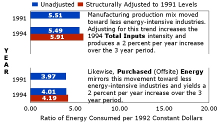
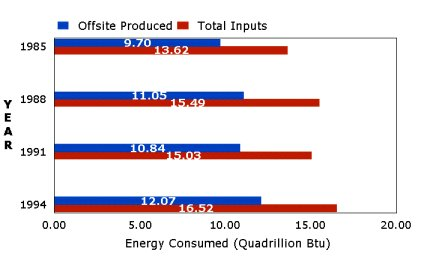
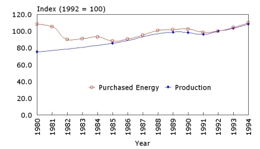

Full Report
Introduction
Summary of Data
Data Tables
Data Summaries
Appendices
Survey Design
Quality of Data
Sector Description
Nonobservation Errors
Glossary
Intensity Sites
Commercial
Residential
Transportation
International

Changes in Energy
Intensity
Click for Full Graph

Consumption of Energy
Click for Full Graph

History of
Shipments
Click for Full Graph |
|
The focus of this data report is
on intensity of energy use, measured by energy consumption relative to constant dollar
shipments of manufactured products -- commonly called energy intensities (EI) by energy
analysts. This report explicitly relates changes in two energy measures of energy
intensity to efficiency, while being cognizant that there are structural and behavioral
effects enmeshed in those measures of energy efficiency. Reporting EI serves to continue
the Intensity Change report series.
Key Findings
- Manufacturers in 1994 used essentially the same Total Inputs of Energy per unit
of production output as in 1991. In 1994, they consumed 5.49 thousand Btu for each
constant dollar (1992) value of shipments, compared to 5.51 thousand Btu in 1991.
- However, these overall energy-use rates depend on the energy use in individual
industries, and on the relative mix of goods produced by the evolving manufacturing
sector. The 1994 rate, when adjusted to reflect 1991 product mix, rose from 5.49
thousand Btu to 5.91 thousand Btu, suggesting a significant (2.4 percent per year)
increase in intensity over the 1991-1994 period.
- The largest decreases in intensity were in the Furniture and Fixtures group (SIC
25) and the Industrial Machinery and Equipment group (SIC 35), which cut their energy use
per unit of output by 33 percent and 18 percent, respectively.
- Conversely, the Petroleum and Coal Products group (SIC 29) and the Food and
Kindred Products group (SIC 20) increased in energy intensity by 32 percent and 17
percent, respectively.
- In 1994, manufacturers required more Offsite-Produced Energy per unit of
production output than in any of the three earlier survey years, consuming 4.01 thousand
Btu for each constant dollar (1992) value of shipments. This ratio gradually rose
from 3.84 in 1985 to 3.88 in 1988, and then to 3.97 in 1991.
Adjusting product mix to a base year of 1985, Offsite-Produced Energy per output
still rose steadily from 3.84 thousand Btu for dollar value of shipments in 1985 to 4.10
in 1994, which represents a slight annual increase of 0.73 percent over the nine-year
period.
For a historical summary, tables
1-12 provide energy-intensity ratios and changes in intensity for the every combination of
the 1985, 1988, 1991, and 1994 surveys. For the changes between the latest two MECS (1991
and 1994), graphical summaries have been provided at the total
manufacturing level and for each of the 17 2-digit manufacturing groups listed below.
Durable Goods |
Non-Durable Goods |
|
|
|
|
|

 Top of Page
Top of Page MECS Home Page
MECS Home Page